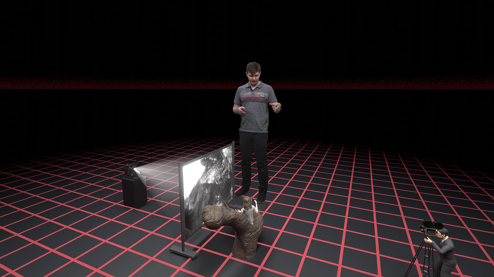
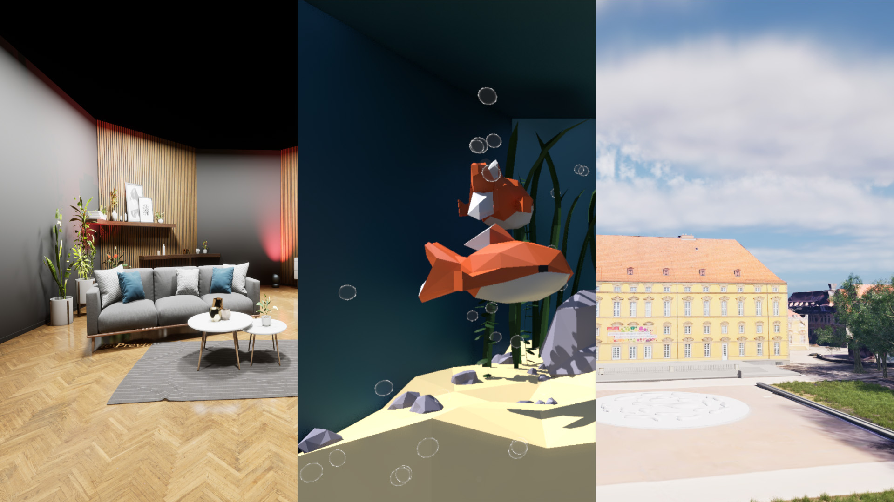
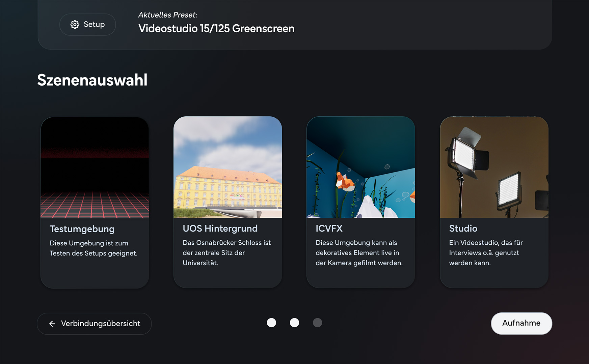
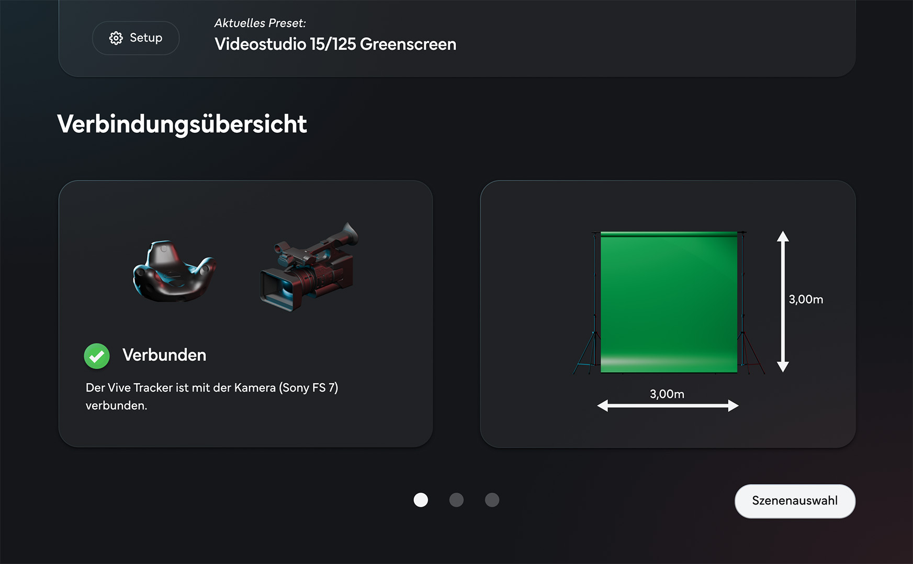

SnapshotVP
Bachelorarbeit
„SnapshotVP“ ist der Name einer Anwendung, die ich im Rahmen meiner Bachelorarbeit entwickelt
habe.
Die Bachelorarbeit hat sich mit dem Thema der virtuellen Produktion (Virtual Production) in der
Filmproduktion beschäftigt.
Die prototypische Anwendung ist mit der Unreal Engine entwickelt worden und hat das Ziel den
Einrichtungsprozess für virtuelle Filmsets zu optimieren.
Das Design und Konzept ist u.a. in Figma entstanden. Zur Demonstration der Technik ist ein
Kurzfilm über die Geschichte der visuellen Effekte im Kino entstanden, der insbesondere die
Möglichkeiten eines HTC-Vive-Tracking-Systems zeigen soll.



